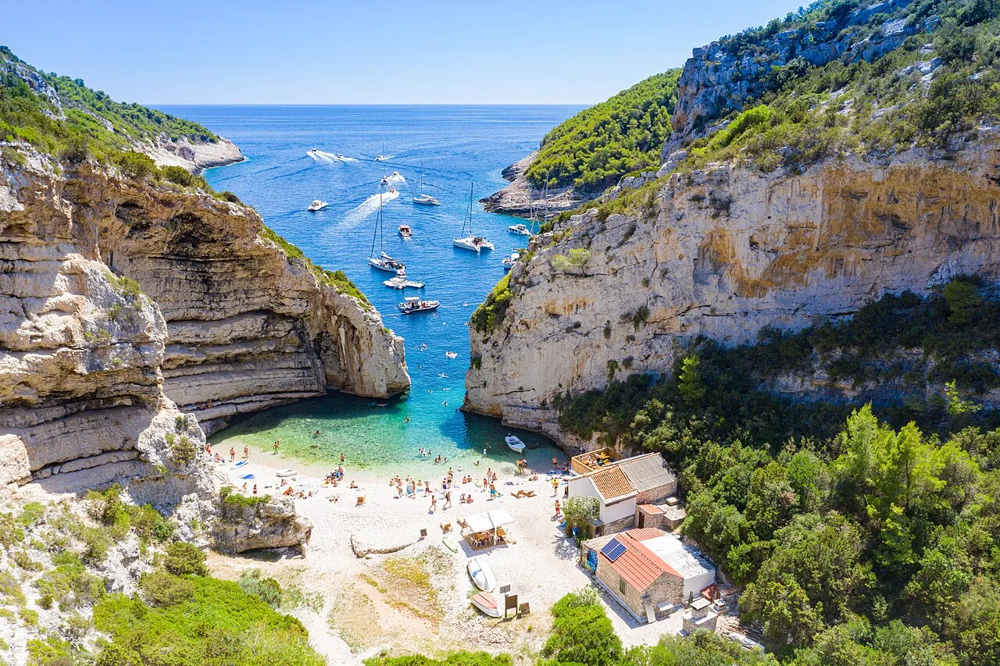

Stiniva
Île de Vis, Croatie · kayak, snorkeling, baignade

Crique cachée derrière une étroite ouverture entre deux falaises. On y arrive à la nage, en kayak ou par un sentier raide.
- Lieu
- Île de Vis, Croatie
- Niveau
- Intermédiaire
- Activités
- kayak, snorkeling, baignade
- Type d'eau
- Mer / océan
- Coordonnées
- 43.02, 16.17 (position approximative du secteur)
Dangers à connaître
- Sentier raide et caillouteux.
- Trafic de bateaux devant l’entrée.
Le conseil d'Ocean Buddy
Viens tôt : le sentier est court mais raide, et les bateaux arrivent en fin de matinée.
Ouvrir dans Ocean Buddy Télécharger sur l'App Store
Source : Fiche Ocean Buddy · septembre 2026 · à vérifier localement.